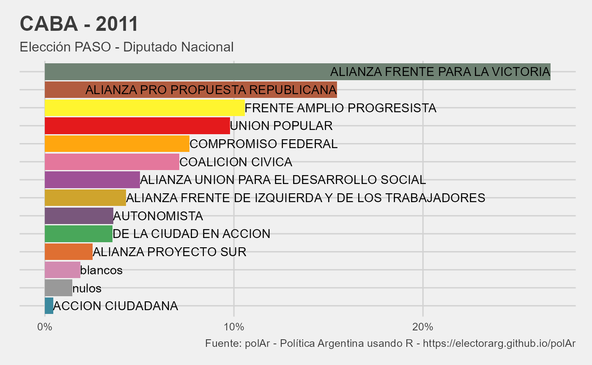
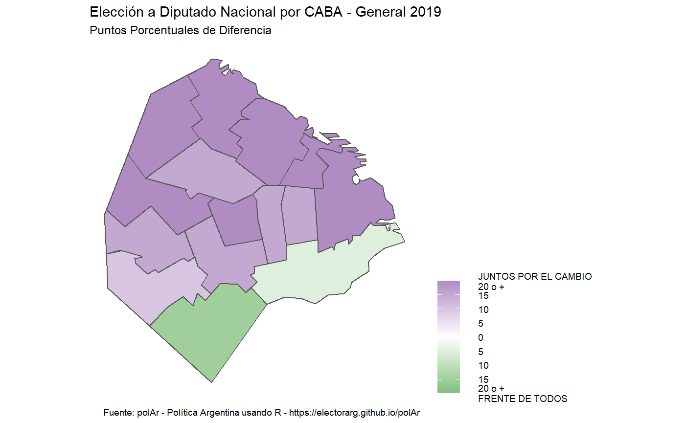

library(polAr)
Para poder obtener resumenes visuales de los resultados de la elección hay que tener presente el nivel de agregación de los mismos a la hora de descargar los datos con get_election_data(). En el caso de la tabla es condición que el mismo sea con parámetro level = "provincia". Para los gráficos, en cambio, se puede hacer tanto a nivel provinica como departamento y para los mapas en el nivel secundario
(In order to obtain visual summaries of the election results, it is necessary to take into account their level of aggregation when downloading data with get_election_data(). In the case of tabulates, it is a condition to set parameter level = "province". For plots, however, it can be done at both the provincial anddepartment levels, and for maps only with the secondary level).
Otros requisitos son (Other requirements are):
El formato de data debe ser long (data format must be long).
data tiene que haber incorporando los nombres de las listas. Estos se pueden agregar con la función auxiliar get_names, aunque las funciones de visualización buscaran completar esa información automáticamente (data must have the names of the lists. If missinig, these can be added with the get_names helper function.).
El siguiente es un ejemplo que describe esos pasos para generar una tabla. Nótese que get_election_data() no especifica el level, puesto que el valor por defecto es provincia (The following is an example that describes steps to generate a table. Note that get_election_data() does not specify the level, since the default is province).
caba_2011_diputados_general <- get_election_data(district = "caba", category = "dip", round = "paso", year = 2011, long = TRUE) tabulate_results(caba_2011_diputados_general)
| CABA - 2011 | |
|---|---|
| Elección PASO - Diputado Nacional | |
| Lista | Votos |
| 0501-ALIANZA FRENTE PARA LA VICTORIA | 26.7% |
| 0518-ALIANZA PRO PROPUESTA REPUBLICANA | 15.4% |
| 0510-FRENTE AMPLIO PROGRESISTA | 10.6% |
| 0023-UNION POPULAR | 9.8% |
| 0509-COMPROMISO FEDERAL | 7.6% |
| 0536-COALICION CIVICA | 7.1% |
| 0504-ALIANZA UNION PARA EL DESARROLLO SOCIAL | 5.0% |
| 0517-ALIANZA FRENTE DE IZQUIERDA Y DE LOS TRABAJADORES | 4.3% |
| 0036-AUTONOMISTA | 3.6% |
| 0302-DE LA CIUDAD EN ACCION | 3.6% |
| 0508-ALIANZA PROYECTO SUR | 2.5% |
| blancos | 1.9% |
| nulos | 1.4% |
| 0179-ACCION CIUDADANA | 0.4% |
| Fuente: polAr - Política Argentina usando R - https://electorarg.github.io/polAr | |
Una posibilidad adicional que brinda la función es poder exportar código de \(\LaTeX\) pre formateado para armar tablas (An additional feature is the possibility to export preformatted \(\LaTeX\) code for tables).
tabulate_results(caba_2011_diputados_general, LaTeX = TRUE) #> [1] "\\captionsetup[table]{labelformat=empty,skip=1pt}\n\\begin{longtable}{lr}\n\\caption*{\n\\large CABA - 2011\\\\ \n\\small Elección PASO - Diputado Nacional\\\\ \n} \\\\ \n\\toprule\nLista & Votos \\\\ \n\\midrule\n0501-ALIANZA FRENTE PARA LA VICTORIA & $26.7\\%$ \\\\ \n0518-ALIANZA PRO PROPUESTA REPUBLICANA & $15.4\\%$ \\\\ \n0510-FRENTE AMPLIO PROGRESISTA & $10.6\\%$ \\\\ \n0023-UNION POPULAR & $9.8\\%$ \\\\ \n0509-COMPROMISO FEDERAL & $7.6\\%$ \\\\ \n0536-COALICION CIVICA & $7.1\\%$ \\\\ \n0504-ALIANZA UNION PARA EL DESARROLLO SOCIAL & $5.0\\%$ \\\\ \n0517-ALIANZA FRENTE DE IZQUIERDA Y DE LOS TRABAJADORES & $4.3\\%$ \\\\ \n0036-AUTONOMISTA & $3.6\\%$ \\\\ \n0302-DE LA CIUDAD EN ACCION & $3.6\\%$ \\\\ \n0508-ALIANZA PROYECTO SUR & $2.5\\%$ \\\\ \nblancos & $1.9\\%$ \\\\ \nnulos & $1.4\\%$ \\\\ \n0179-ACCION CIUDADANA & $0.4\\%$ \\\\ \n\\bottomrule\n\\end{longtable}\n\\begin{minipage}{\\linewidth}\n\\textbf{Fuente:} polAr - Política Argentina usando R - \\emph{https://electorarg.github.io/polAr}\\\\ \n\\end{minipage}\n"
Usando el mismo objeto caba_2011_diputados_general con el que se armó la tabla, plot_results genera un gráfico con los resultados. Automáticamente lo hará al nivel de agregación que se encuentren los datos. En este caso provincia
(Using the same caba_2011_diputados_general object with which the table was built,plot_results generates a plot. It will automatically do so at the level of aggregation that the data is at. In this case province).
plot_results(caba_2011_diputados_general)

Para poder visualizar la información en un mapa es necesario contar con información a un segundo nivel de agregación. Así, si lo que estamos analizando son diputados nacioanles de una provincia, el nivel de agregación deberían ser los departamentos. Si en cambio estamos analizando elecciones a presidente, el nivel de agregación deberían ser las provincias. Un ejemplo del primer caso
(In order to display the information on a map, it is necessary to have information at a second level of aggregation. Thus, if what we are analyzing national deputies election in a province, the level of aggregation should be the departments. If instead we are analyzing presidential elections, the level of aggregation should be the provinces. An example of the first case)
caba_2019_departamento <- get_election_data(district = "caba", category = "dip", round = "gral", year = 2019, level = "departamento") caba_2019_departamento #> # A tibble: 120 x 10 #> # Groups: codprov, depto, coddepto [15] #> category round year codprov name_prov depto coddepto electores listas #> <chr> <chr> <dbl> <chr> <chr> <chr> <chr> <dbl> <chr> #> 1 dip gral 2019 01 CABA Comu~ 001 0 00016 #> 2 dip gral 2019 01 CABA Comu~ 001 0 00024 #> 3 dip gral 2019 01 CABA Comu~ 001 0 00036 #> 4 dip gral 2019 01 CABA Comu~ 001 0 00037 #> 5 dip gral 2019 01 CABA Comu~ 001 0 00050 #> 6 dip gral 2019 01 CABA Comu~ 001 0 00108 #> 7 dip gral 2019 01 CABA Comu~ 001 0 blanc~ #> 8 dip gral 2019 01 CABA Comu~ 001 0 nulos #> 9 dip gral 2019 01 CABA Comu~ 002 0 00016 #> 10 dip gral 2019 01 CABA Comu~ 002 0 00024 #> # ... with 110 more rows, and 1 more variable: votos <dbl> map_results(caba_2019_departamento)
